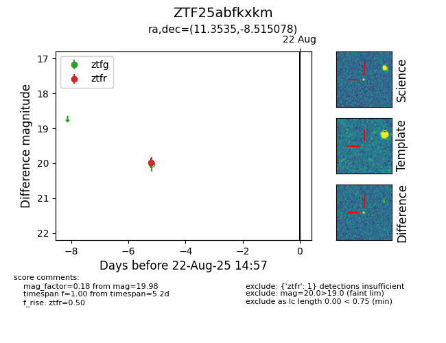

Target ZTF25abfkxkm at 2025-08-22 15:07, see:
FINK: fink-portal.org/ZTF25abfkxkm
Lasair: lasair-ztf.lsst.ac.uk/objects/ZTF25abfkxkm
ALeRCE: alerce.online/object/ZTF25abfkxkm
alt names
ZTF25abfkxkm (ztf,alerce)
coordinates:
equatorial (ra, dec) = (11.3535,-8.51508)
galactic (l, b) = (118.2742,-71.33233)
photometry
last ztfr=19.98
1 ztfr detections
